Examples#
The source distribution includes 11 short lessons under examples/. Each one adds one concept
to the ones before it and builds its scene from Universal Scene Description (USD) written in the
program. It checks its results and renders the scene with the ovRTX renderer, so you can
see what the queries found. Lessons 01 to 10 each come as a Python program and a C++ program
that calls the C API directly. Lesson 11 pairs a C++ producer with a Python presenter.
Note
Before you run a lesson, check that you have an NVIDIA GPU for rendering and these packages:
Package |
Supported Versions |
|---|---|
ovstage |
0.4 |
ovRTX |
0.7 |
NVIDIA Warp ( |
1.18 |
ovRTX 0.7 works only with ovstage 0.4, so the lessons need ovstage 0.4 even though the library
also supports 0.3. Lessons 08 to 10 run their plan or pair reporter on the GPU, and on the CPU when
the library cannot run it there. The other queries run on the CPU. The examples/README.md file
in the source distribution describes how to build the library and set up the lesson packages.
Run a lesson from the source root with this command:
./dev.sh example 01
On Windows, use dev.cmd example 01. Add --headless to render a few frames to files instead
of opening a window. For lessons 01 to 10, add --language native to run the C++ program, or
--language both to run both programs. Lesson 11 runs only with the default --language python.
Each card names a lesson and the concept it adds:
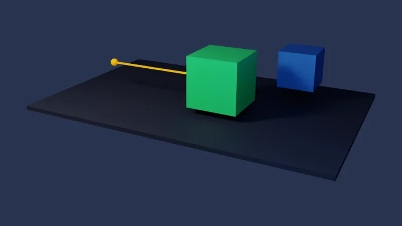
static_candidate_raycast: one synchronous raycast against an ovstage population, closest
bounds candidate.
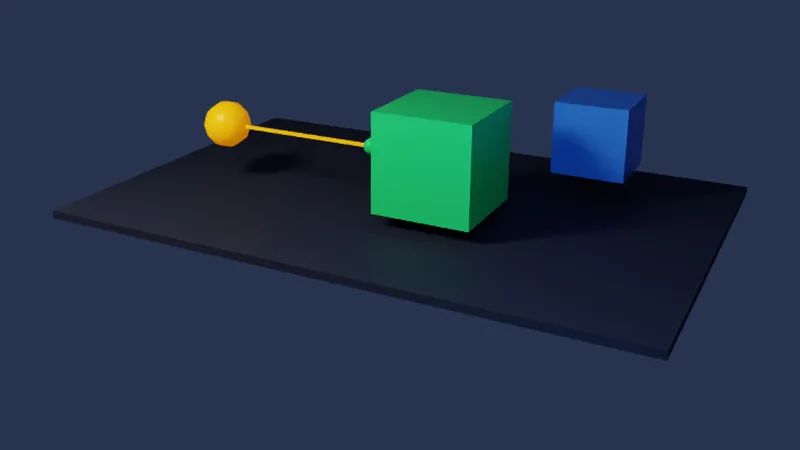
sphere_sweep: a moving sphere and the first object it would touch.
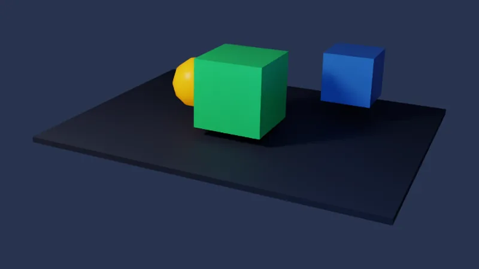
shape_overlap: whether a sphere you describe touches anything.
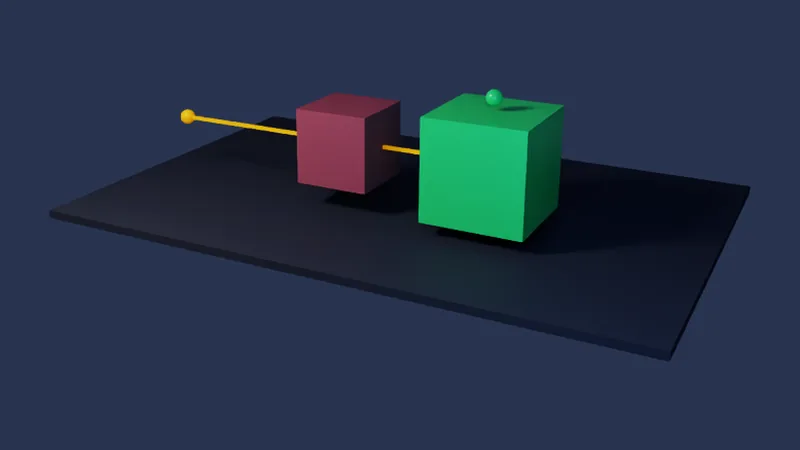
filtered_view: the same ray against a population and a view that skips the nearer object.
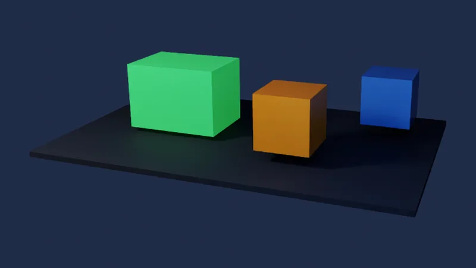
two_set_pair_snapshot: the bounding-box pairs between two populations and both ordinals.
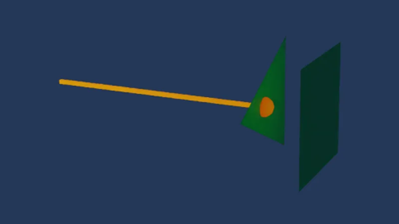
precise_triangle: an exact ray hit on a mesh, with the authored face and barycentrics.
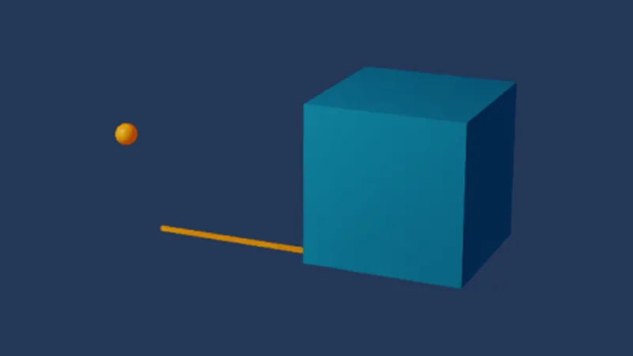
time_sampled_update: publish a new USD time sample as a new ordinal.
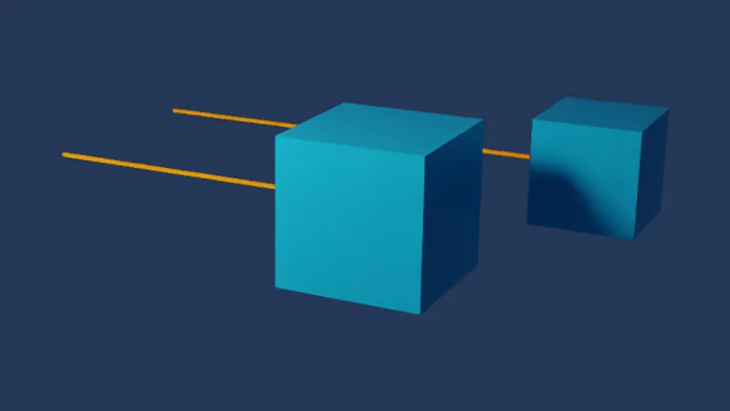
reusable_cpu_batch: one raycast plan, on the GPU when there is one, two launches, result
columns.
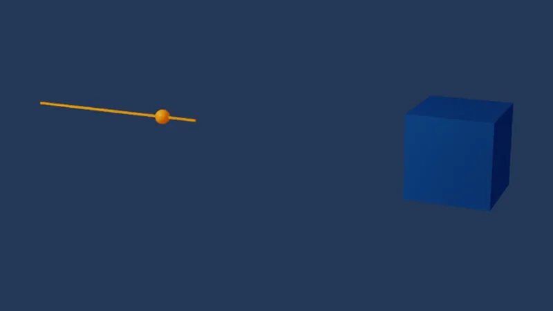
immutable_version_overlap: a batch in flight keeps reading the version it was admitted on
while the next one is published.
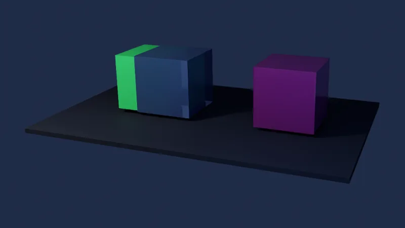
pair_reporter_deltas: a reporter’s baseline, then the pair that exits.
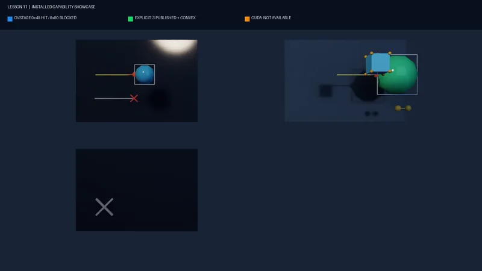
capability_showcase: ovstage participation bits, an explicit population, and batch plans
on a CUDA device, side by side. The device plans run only with --require-cuda on a CUDA host.
By default, the CUDA panel is marked not available.